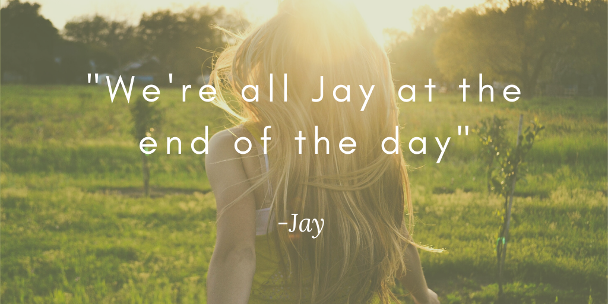

Social Media
Videos
Meatbeats
About
About Brobq
Well, if you aren't ready to be picked on you may not enjoy this content. However, it is always in good fun and good nature. It's like Bro always says, it be like that sometimes. He lives for banter. Hell, there is a song in
Meatbeats
that is literally named Bants. His laugh is contagious and he truly is kind hearted and cares about his community. Yes, even you ThePapaLurk and Shawn. I'll leave you with a simple puzzle.. what do yellow and red make?
If you figure out the answer drop it in the chatroom when Brobq is live next. After all...
